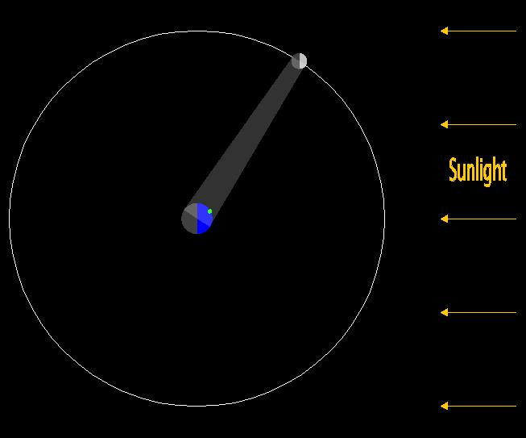
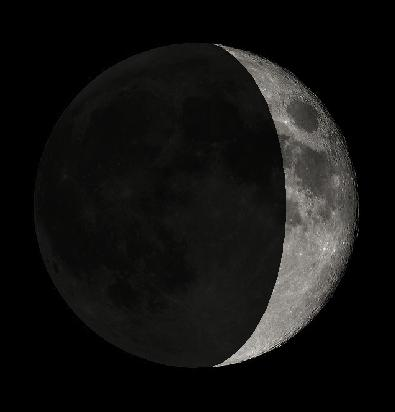

MoonPhases
General Description
This program illustrates how the appearance of Moon changes depending on the position of Moon relative to Earth and Sun. The left window shows Earth (at the center) and Moon, as well as a circle tracing out Moon's orbit. Sun is far to the right in this picture and therefore the right side of Earth and Moon are bright while the left sides are dark. A glowing band of light shows the portion of Moon visible from Earth, as well as the portion of Earth from which Moon is visible. The angle between Sun and Moon (as seen from Earth) can be adjusted. A green dot indicates an observer on Earth and the observer's local (mean solar) time can be set, which effectively changes the observer's location on Earth in this picture.
The right window shows the appearance of Moon as seen from Earth when Moon is in the position shown in the left window. Note that the darkness of the dark part of Moon changes depending on the loction of Moon in its orbit. This is because Moon receives reflected light from Earth, a phenomenon known as Earthlight, and the amount of reflected light received is connected to the location of Moon in its orbit.
Visual Elements
- Orbit Frame
- Visual Elements Menu
- Show Moon View: select to show view of Moon as seen from Earth.
- Show Observer: select to show the location of an observer on Earth. The local time for the observer is given at the bottom of the window and can be adjusted using the slider.
- Show Moon's Orbit: select to show orbital path of Moon.
- Show Light Cone: select to show light cone indicating portions of Moon that can be seen by Earth and portions of Earth that can see Moon.
- Blue/black disk: Earth (greatly exaggerated in size compared to Moon's orbit).
- Green dot: shows location of observer on Earth.
- White/black disk: Moon (also exaggerated in size).
- White circle: Moon's orbit around Earth.
- Yellow arrows: indicate the direction of incoming sunlight. Sun is far to the right.
- Transparent white band (light cone): shows the portion of Moon that is visible from Earth as well as the portion of Earth from which Moon is visible.
- Moon View Frame
- Shows view of Moon as seen from Earth when Moon is in the position shown in the Orbit Window. Illustrates the phase of Moon as well as the Earthlight phenomenon (see above).
Control Frame
- Play/Pause Button: play/pause Moon's motion along its orbit.
- Angle: slider controls the angle between Sun and Moon, as seen from Earth. This effectively moves Moon around in its orbit as seen in the Orbit Window.
- Local Time: sets the local mean solar time for an observer (indicated by the green dot) on Earth. Time is in hours, with 0 corresponding to midnight.
Todd K. Timberlake (ttimberlake@berry.edu)